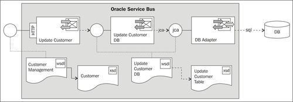
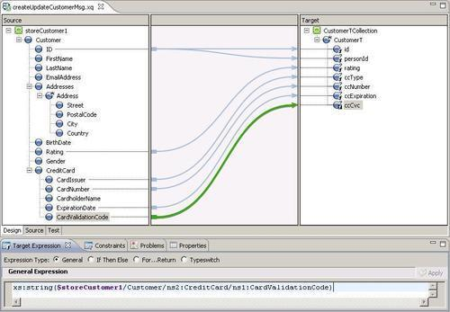
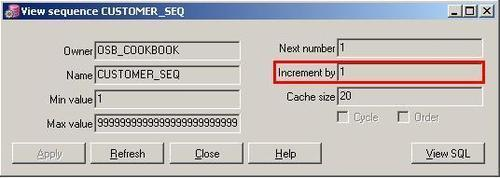
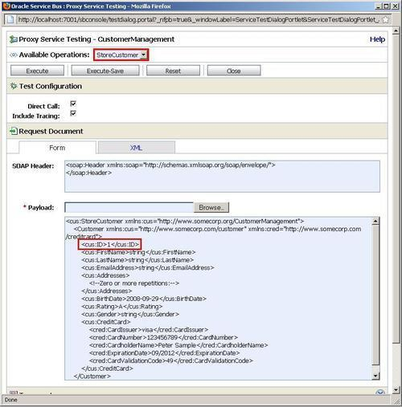

In this recipe, we will configure an outbound DB adapter, so that it can be used to update data in one or more tables. The adapter will be invoked from a business service, which can be generated using Eclipse OE:

The business service implements a WSDL-based interface. The WSDL and XSD being used for that interface are generated by the DB adapter and are dependent on the database tables and their columns.
In this recipe, we will show how to wrap that business service with a proxy service using its own WSDL and XSD. By that we use a contract-first approach and have full control over the interface we offer to our consumers.
For the configuration of the DB adapter, we will use JDeveloper and then switch to Eclipse to implement the proxy service wrapping the inbound DB adapter.
For this recipe, we will use the database tables created with the OSB Cookbook standard environment. Make sure that the connection factory is set up in the database adapter configuration, as shown in the Introduction of this chapter.
You can import the OSB project containing the base setup for this recipe into Eclipse from \chapter-7\getting-ready\using-db-adapter-to-update-to-table.
First we create the DB adapter, which will implement the update to the database. In JDeveloper, perform the following steps:
composite.xml of the project UpdateToDB. UpdateCustomer in the Service Name field and click on Next. CUSTOMER_T to the selected list and click on OK.Due to a bug in the current version of the DB adapter generator, one of the generated files must be tweaked. Otherwise we will get an error in the OSB project in Eclipse OEPE.
UpdateCustomer-or-mappings.xml.<sequence-field table="CUSTOMER_T" name="ID"/>.<sequence-field name="ID"/>.The DB adapter used to create or update a customer is now ready to be used.
The work in JDeveloper is now done, let's switch to Eclipse OEPE and perform the following steps:
UpdateCustomer_db.jca file and select Oracle Service Bus | Generate Service from the context menu. business folder for the location of the business service.Next we will create the proxy service, which implements the StoreCustomer operation defined in the CustomerManagement.wsdl. In Eclipse OEPE, perform the following steps:
proxy folder, create a proxy service and name it CustomerManagement. InvokeDBRoute.We have created the proxy service that invokes the business service using the DB adapter. What we have not yet done is formatting the message according to the interface of the UpdateCustomer_jca business service. Next we will create an XQuery mapping file, which transforms the request message from the proxy service interface to the message the business service/DB adapter expects. In Eclipse OEPE, perform the following steps:
transformation folder, right-click and select New | XQuery Transformation. createUpdateCustomerMsg into the File name field and click on Next. storeCustomer into the Parameter Name field and click on Next. xs:string($storeCustomer1/Customer/ns2:CreditCard/ns1:CardValidationCode). Select the target element, that is, ccCvc, navigate to the Target Expression tab to specify the expression, and click on Apply. You have to be in the XQuery Transformation perspective. The end result should look similar to the one shown in the following screenshot:
body into the In Variable field. $body/cus:StoreCustomer into the Binding field for the storeCustomer1 parameter and click on OK.So we have made sure that the message sent to the DB adapter is properly formatted. Next, we also have to treat the response that we get from the business service/DB adapter and format it appropriately. In Eclipse OEPE, perform the following steps:
body into the Variable field.<soap-env:Body>
<cus:StoreCustomerResponse>
<cus:ID>{$body/upd:CustomerTCollection/upd:CustomerT/upd:id}</cus:ID>
</cus:StoreCustomerResponse>
</soap-env:Body>
upd into the Prefix field and http://xmlns.oracle.com/pcbpel/adapter/db/top/UpdateCustomer into the URI field.Before we can test the proxy service, the connection factory used by the DB adapter must be modified, so that the sequencePreallocationSize property matches the database sequence increment, which is set to 1 for the CUSTOMER_SEQ sequence, as shown in the following screenshot:

In the WebLogic Console, perform the following steps:
1 into the Property Value field and press Enter (this is important because otherwise the entered value will not be saved).The service can now be tested. In the Service Bus console, navigate to the test console and execute:

This modifies an existing customer with PK 1. When the row<cus1:ID>1</cus1:ID> is removed, a new customer will be inserted in the table.
The merge operation of the DB adapter detects itself whether a record is already available in the table or not. Depending on that, either a SQL UPDATE or INSERT is applied. If there is no customer ID provided or the provided one could not be found, a new record is created.
If an ID is provided but no record can be found, the provided value will be used as the primary key of the new record. If no ID is provided, the value for the primary key will be retrieved from the database sequence before inserting the new record.
Note that, we have set the Transaction Required flag of the CustomerManagement proxy service. Setting this flag starts an XA transaction, even though the inbound protocol (HTTP) is not transactional.
Technically, the DB adapter is executed by the DbAdapter component, which is deployed on WebLogic server as a resource adapter. The adapter we created uses resources of the DbAdapter component. Therefore, we had to configure the connection factory there, which in turn uses the data source resource configured on WebLogic server as a standard data source.
The CUSOMER_SEQ database sequence is used by the DB adapter in case of an INSERT to generate a unique identifier for the primary key.
Instead of using the Merge operation of the DB adapter, we could have chosen an update-only or an insert-only operation or even execute a pure SQL statement, which allows a completely self-written, self-tuned SQL statement, and permits bind parameters.
Two flags of the DB adapter deserve special mentioning, as their consequences and side effects are not always obvious:
The Detect Omissions flag can be set on the last page (Advanced Options screen) of the DB adapter wizard. The behaviour of this flag is sometimes mysterious to the beginner. It takes two values , which are as follows:
MERGE, this will prevent valid but unspecified values from being overwritten with NULL. For INSERT operations, they will be omitted from the INSERT statement, allowing default values to take effect.The latter behaviour (DetectOmissions = false) is often useful, as in an XQuery transformation, it is mostly easier to express a NULL value by the absence of an element rather than adding the attribute xsi:nil="true" to the element. This behaviour however, often steps in unexpectedly at first sight. Imagine the following situation: The CVC field of a credit card is often entered in a separate step in an application. If we design a service which allows updating only the CVC column in the CUSTOMER_T table, then a call to the DB adapter with only the CVC element set in the XML would clear out all other fields of the record. So, be cautious when setting Detect Omissions to false and prefer adding an xsi:nil="true" attribute, even though it looks like more work in the first place!
One more flag to be set on the Advanced Options screen is the Get Active UnitOfWork. It is intended to pin a JDBC connection to the global XA transaction. One side effect of setting this flag however, is that it delays all writes to the database until the commit of the global transaction.
By that, errors on inserts or updates due to constraints or trigger failures occur only when these operations are no longer under control of a proxy service. Such errors cannot be cached by an error handler in a proxy service. In cases where it is essential to be able to handle such errors, the Get Active UnitOfWork flag should not be enabled.